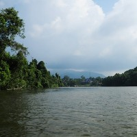
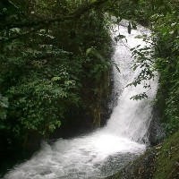
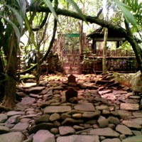
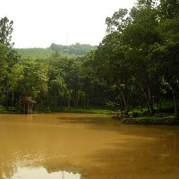
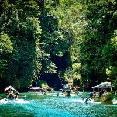
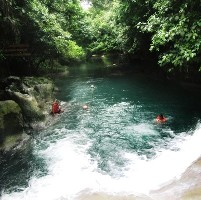
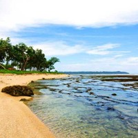
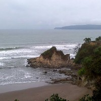
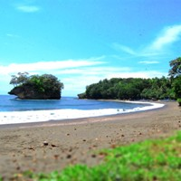

-

Situ Lengkong
Desa / Kecamatan Panjalu
-

Curug Tujuh
Desa Sandingtaman Kecamatan Panjalu
-

Cagar Budaya Astana Gede
Desa/Kecamatan Kawali
-

Cagar Budaya Karangkamulyan
Desa Karangkamulyan Kecamatan Cijeungjing
-

Situ Mustika
Desa Karangpaningal Kecamatan Purwaharja
-

Gua Donan
Desa Tunggilis Kecamatan Kalipucang
-

Pantai Karang Nini
Desa Emplak, Kecamatan Kalipucang
-

Pantai Indah pangandaran
Desa Pananjung Kecamatan Pangandaran
-

Cagar Alam pananjung
Desa Pangandaran Kecamatan Pangandaran Kabupaten Ciamis
-

Pantai Karang Tirta
Desa Sukaresik Kecamatan Pangandaran
-

Pantai batu Hiu
Desa Ciliang Kecamatan Parigi
-

Pantai batu karas
Desa Batukaras, Kecamatan Cijulang
-
Pantai Keusik Luhur
Desa Kertamukti Kecamatan Cimerak
-

Cukang Taneuh (Green Canyon)
Desa Kertayasa Kecamatan Cijulang
-

Pemandian Alam Citumang
Desa Bojong Kecamatan Parigi
-

Pantai Karapyak
Desa Bagolo Kecamatan Kalipucang
-

Pantai Palatar Agung
Desa Bagolo
-

Majingklak
Desa Pamotan Kecamatan Kalipucan
-

Pantai Madasari
Desa Masawah Kecamatan Cimerak
-
Lapangan terbang Nusawiru
Desa Kondangjajar Kecamatan Cijulang
-

Pantai Lembah Putri
Desa Ciputrapinggan